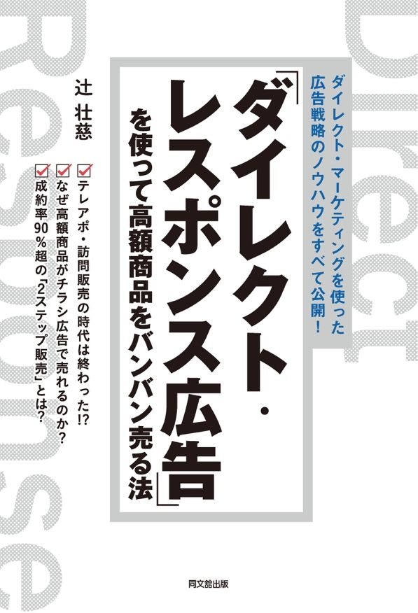
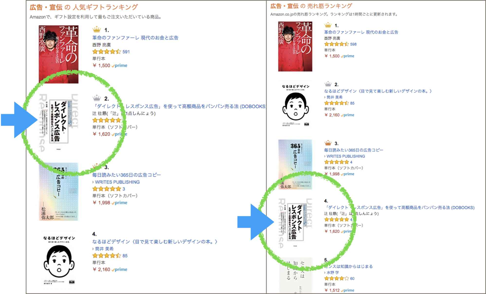
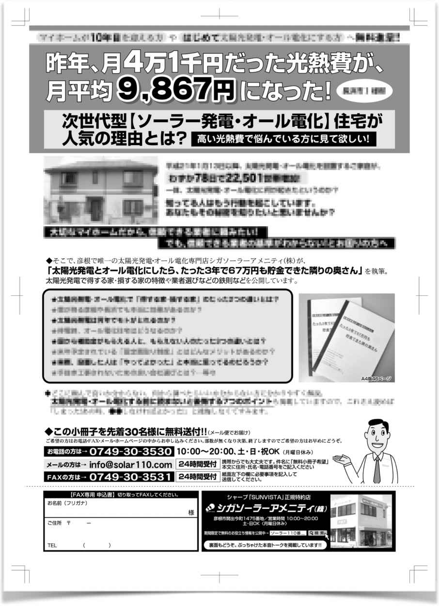
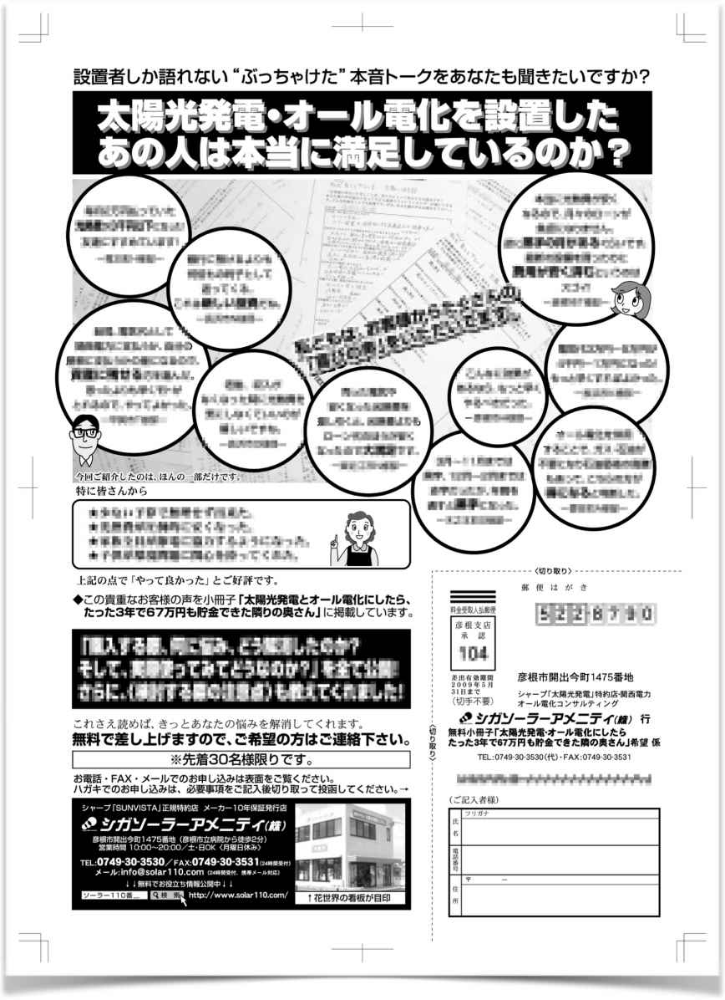
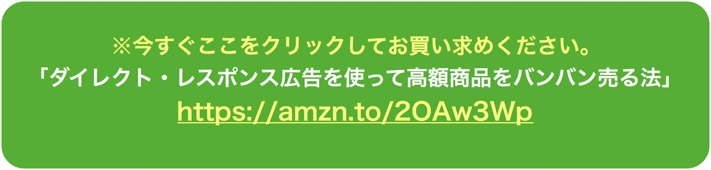
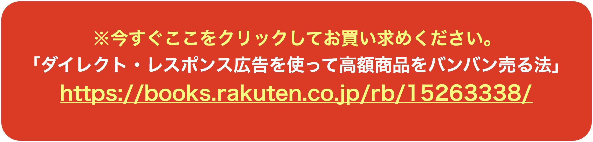
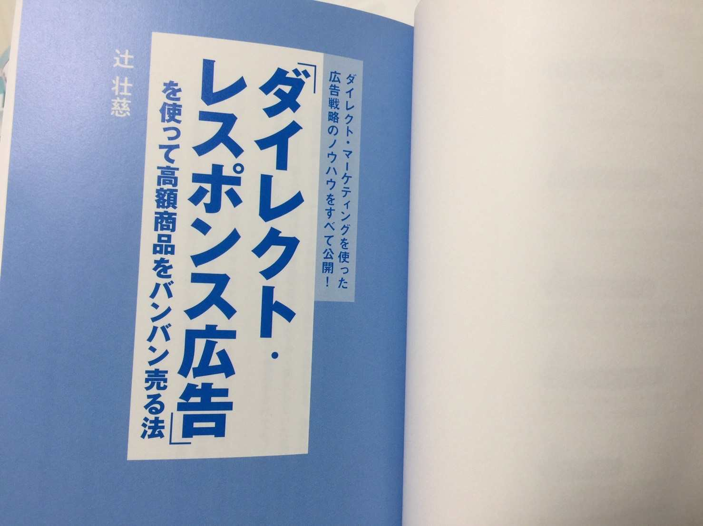

| ダイレクト・マーケティング広告戦略: 売れる広告８つの秘密 | |
| 辻壮慈 | |
| (2019) | |
******************************************************
以前、お世話になったS社長に電話で相談したら、
開口一番こう言われました。
「チラシで太陽光発電が売れるわけないやんけ！大根や卵を売るんちゃうぞ！？
太陽光発電は訪問販売でしか売れへん。勘違いしたらあかん！」
電話を切った後、心の中で、
「でも、もう俺にはこれしかないんです...。
S 社長みたいに営業マン20人、アポインター40人もいるような大きな会社じゃないんです。５人いたスタッフはみんな辞めてしまって、残ったのは俺だけなんです。俺ひとりでテレアポや飛び込み営業なんて無理です...。
チラシで売るしか道がないんです...」
******************************************************
この電子書籍を読んでみたい！と思って頂き、本当にありがとうございます。
売れる493.comの辻壮慈（つじたけし）と申します。
2018年1月13日ビジネス本「ダイレクト・レスポンス広告」を使って高額商品をバンバン売る法を同文舘出版より発売しました。

おかげさまで、Amazonレビューや書評サイトでも高い評価をいただき、Amazonランキング広告宣伝人気ギフト第２位、売れ筋ランキング第４位までいきました。
この電子書籍は出版が決まる前（2012年〜2016年の４年間）の小冊子を加筆修正したものになります。
つまり、 書籍の元ネタ・原稿 みたいなものです。
この小冊子を執筆していた当時は、東日本大震災の影響もあって太陽光発電が注目されていました。
業界を知らない人からすると「追い風」のように見えましたが、
実際、業界の中では、とんでもない逆風が吹いていました。
・訪問販売でしか売れない商品
・悪徳業者が大量発生し社会問題に
・家電量販店やネット企業などの大企業が参入
・強烈な価格競争
・中小企業は資金繰りショートで倒産ラッシュ
等々、実はかなり「過酷な業界」と言われていた太陽光発電でした。
そんな過酷な業界の中で、
私がたった１人で10年以上戦って、勝ち続けたチラシ広告戦略です。
もちろん、今も滋賀県彦根市で
シャープの太陽光発電や蓄電池をチラシ広告で販売しています。
（参照：シガソーラーアメニティ株式会社「ソーラー110番」で検索してください）
この小冊子（電子書籍）は著書ダイレクト・レスポンス広告（紙の本）と比べて、まだまだ荒削りですが、当時の勢いが残っている内容だと思います。
ぜひ、最後までお読みください。
きっと、あなたのお役に立てると思います。
著者：辻壮慈（つじたけし）

2008年3月、父（社長）と2人で話したのを今でも覚えています。
当時、それくらい追い込まれていました。
あなたも、昔の私のように、
訪問販売の限界 を感じている のではありませんか？
インターネットで何でも調べることができる時代です。
契約してもすぐにクーリングオフされたり、
相見積もりで利益ゼロの契約したりしていませんか？
私がこれからご提案するチラシ広告は、
・見積価格が 他社よりも高く ても、お客さんは納得して買ってくれます。
・高度な交渉技術が不要なため、新人営業マンでも 成約率が高く なります。
・ 質のいいお客さん と商談できます。
・クーリングオフなどの キャンセル率が０％ になります。
・お客さんから断られることが激減するので ストレスがなくなり ます。
・お客さんが「あなたから買いたい」と言ってくれます。
・お客さんからの 紹介が増えます。
・仕事が 楽しく なり、毎日 ワクワク します。
など訪問販売では経験したことがない世界がまっています。
しかし、普通のチラシでは全くダメです。
普通のチラシでは、お客さんからの問合せはゼロでしょうし、
万が一、問合せがあっても相見積りで 安値競争 に巻き込まれてしまいます。
チラシ広告には、「強力なマーケティングの仕掛け」と「心理戦」が必要です。
お客さんの心理を上手に使った戦略・戦術で
「売れる仕組み」を作らなければライバル会社に勝てません。
しかし、一度、仕組みを作れば、こっちのもんです。
広告を打てば打つほど面白いように売上があがります。
ライバル会社がテレアポや飛び込み営業の訪問販売を頑張れば、頑張るほど、
こちらの売上があがります。
正直に告白しますと、私も2004年頃までは電話営業（テレアポ）の即断・即決の営業スタイルで順調に業績を伸ばしていたので、 「チラシなんかで売れるわけがない」 とバカにしてました。
実際、父（社長）がつくったチラシや、シャープから購入したチラシを何度も新聞折込みチラシにだしましたが、問合せはゼロでした。
しかし、2005年頃からテレアポでは業績が上がらなくなり、
完全に行き詰まりました。
結果、アポインターの女性スタッフも、営業スタッフも全員辞めてしまい、
残ったのは私１人だけに。
このままテレアポ営業を続けてもダメだ。
今までと違うやり方をしないと生き残れない。
何か打開策はないか？
小予算で売上に直結できる方法は？
と、探して探して出会ったのが、
「ダイレクト・レスポンス広告」 でした。
この広告は、アメリカで100年以上の歴史を持つ販売手法で、今までのテレアポや飛込み営業といった「お客さんを探して売り込みに行く」訪問販売とは違い
「広告を見た人が会社に連絡してくる」という今までと真逆の販売方法です。
私も最初は半信半疑でした。
しかし、スタッフが全員辞めてしまったので、
このダイレクト・レスポンス広告に全てを賭けて取り組み始めました。
お金がないので、最初はポスティングから始めたのですが、思うような効果がでず、売上も前年度の半分位に落ち込みました。
特に、2006年、2007年の2年間は本当に苦しかったです。
その当時の私は、家を購入したばかりで、
3人目の子どもが妊娠した時期でもありました。
晩御飯はもやしが続き、妻から「子どもたちにはもっと、ちゃんとしたものを食べさせてあげたい」と涙を流して訴えてきました。
妻が「離婚したい」と言い出したのは１度や２度ではありません。
2008年3月。社長（父親）が、もうこれが最後や。これでダメならもう終わり。バンザイしかない。一か八かの最後の賭けや。と言って、私の作ったチラシ広告を1万部、新聞の折込にだしました。
結果、1,300万円売れました。
一か八かの最後の賭けが当たったんです。
やっとです。ダイレクト・レスポンス広告で結果をだすのに、
私は２年かかりました。
それから、業績がうなぎのぼりで、テレアポ営業やってた時よりも売上がアップし、
人件費がかからない分、経費が抑えられ、利益が大幅にアップしました。
しかし、ここまでの道のりが、本当に険しく厳しかったのは事実です。
200万円以上のお金も使いましたし、出口の見えないトンネルを2年間さまよっていました。この地獄とも言えるような暗闇の2年間を経験して、私はひとつの真理を発見しました。
商売は売りたいものを売るのではなく、
お客さんが欲しい物を売る。
どうしたら売れるか？ではなく、
お客さんが欲しい物って何だろう？から考える。
この発想で考えられるようになったのは、広告宣伝を真剣に学んだ２年間のおかげです。
私がこの2年間で積み上げてきた知識と経験があれば、昔の私を簡単に救うことができた。2年間もさまようことは無かった...。
そんな 「昔の自分を助けたい！」 という一心で、魂込めてこの小冊子を執筆しました。
もし、あなたも訪問販売に限界を感じているなら、必ずお役に立てると思います。
それでは早速、 「ダイレクト・レスポンス広告を使って高額商品を売る方法」 をお読みください。
あなたはチラシ広告と聞くと、どういうチラシ広告を想像しますか？
もしかしたら、家電量販店やスーパーのチラシ広告を
思い浮かべるかもしれませんね。
では、あなたの業界のチラシ広告はどんな広告ですか？
「商品名+チラシ」と検索すると、全国の多種多様なチラシ広告を見ることが出来ます。
もしよかったらGoogleやYahooで
「太陽光発電 チラシ」
「太陽光発電 広告」
と画像検索してください。
世の中に出回っている太陽光発電のチラシ広告が見れます。
どこかで見たことあるような広告がずらりと並んでると思います。
あなたもこういうチラシ広告を見たことがあるのではないでしょうか？
これらのチラシ広告を見てみると...、
「モニター募集」
「特別価格で！」
「当店にお任せください！」
「太陽光発電で快適な暮らしを！」
「今がチャンス！」
「エコ祭り！」
など、いろいろ書いてあります。
断言します。
こんな広告で太陽光発電は売れません。
金のムダ です。
こういう広告にどれだけお金を突っ込んでも "１円も売れない" でしょう。
広告をうてば、うつだけ赤字になります。
そうです。
これらの広告が「売れない広告」です。
世の中の広告は、たったの2つに分けることが出来ます。
「売れる広告」
「売れない広告」
もし、あなたの商圏にいるライバル会社が
これらの「売れない広告」を使っていたら、あなたはラッキーです。
だって、広告を真剣に学んで「売れる広告」を作れば、
あなたは１人勝ちできますので、 圧倒的ナンバーワンに簡単になれる からです。
おそらく、広告屋につくらせたか、
広告屋の話を鵜呑みにして作ったチラシでしょう。
あなたが、いつも見ている新聞・雑誌・チラシ・フリーペーパーなどの広告は、
「売れない広告」です。
なぜなら、そのほとんどが お客さんを完全に無視したチラシ だからです。
お客さんを完全に無視して
"自分の言いたいことだけ言って終わってる"からです。
こういった「売れない広告」を一般的に「イメージ広告」と言います。
イメージ広告とは、写真やイラストが多用され、文字が少なく、デザイン重視のため、広告紙面に余白が多いです。
会社を印象づけるため、会社名やロゴが大きく表示され、問合せの電話番号がとても小さい...。
イメージ広告は、大企業のための広告です。
ブランドが確立されており、ブランド力を落とさないためにイメージ広告を展開しているのです。
基本的に【見せる広告】なので商品を直接売ろうと考えていません。
その広告自体がアート（芸術）になっている広告です。
（代表的なのが「ルイ・ヴィトン」「ROREX」「シャネル」「BMW」「メルセデス・ベンツ」などのハイブランドの広告です。GoogleやYahooで画像検索すれば見れます）
もし、「その広告を見て商品を買った」という人がいても、
そのブランドを前から知っていて、「いつかは欲しい」と、ずーっと思っていた人です。
実際、ルイ・ヴィトンを知らない人に「この広告見て欲しくなる？」って聞いてみてください。「なにこれ？こんなんいらんよ」とほとんどの人が答えます。
逆に、ルイ・ヴィトンを好きな人にこの広告を見せると、
「やっぱりいいよな～。お金あったら欲しいもん」って答えます。
ですので、ブランド力のない（誰も知らない）会社が、大手の真似をしてイメージ広告をつくると、１円も売れず、
「胡散臭い広告」
「意味不明な広告」
というイメージだけが、お客さんの心に残ります。
レスポンス(Response)とは「反応・応答」という意味で、広告の費用対効果が計測できる広告のことです。典型的なのが通信販売の広告。具体的には、健康食品や保険、ダイエット、英会話などによく使われます。
お客さんの心理を徹底的に研究し、
いかに１人でも多くの人に買わせるか？
どういう言葉、どういう文章、どういう色ならレスポンスが上がるか？
を徹底的に追求した広告です。
基本的に文章中心で 読ませる広告 になっています。
また、イメージ広告とレスポンス広告の大きな違いに
「オファー（提案）がある」 というのが特徴です。
無料サンプル
無料お試し
無料ガイドブック
無料レポート進呈...など、
基本は無料が多いですが「500円お試しキット」などの有料のものもあります。
パッと見、すごく怪しい広告が多いです（苦笑）
でも、こういった広告は 「お客さんの悩みに直結」 しているものが多く、
ちょうど悩んでいるお客さんがこういった広告を見たら、ビビビッと反応します。
レスポンス広告を展開している会社は、お客さんの心理を徹底的に考え、繰り返しテストを行い、お客さんの心に刺さる強い広告を作っています。
主に、心理学を中心に構成された広告なので、
・「画像で商品は売れない、文章なら売れる」ことを知っています。
・「短い文章より長い文章の方が売れる」ことを知っています。
・「広告ではまず第一に信用される」ことを重点に考えています。
・「関連性の無いただのきれいな写真は売上が下がる」ことを知っています。
・「お試し品を配った後に売った方が高く売れる」ことを知ってます。
・「ターゲットを絞れば絞るほど売上が上がる」ことを知っています。
無名の会社でも売上がドンドン伸びています。広告をだせばだすほど儲かります。
ですので、あなたはレスポンス広告を作ってください。
お客さんの購買プロセスを逆算し、確実に売れる広告、儲かる広告を作るのです。
広告業界では、昔から「千に3つ（せんみつ）」という言葉があり、
「広告やDMを1000枚配布したら問合せが３件（反応率0.3％）ある」と言われています。
しかし、この数値はバブル絶頂期の「商品を作れば何でも売れた」旧石器時代の話です。今の時代に、こんな数値を信じてはいけません。今は不況のまっただ中です。
現実はこれの1/10～1/50という数値です。
太陽光発電やリフォームなどの高額商品のチラシ広告の反響は、７千枚～８千枚に１件の問合せです。しかも、その1件は冷やかし客も含めた、単に、電話がかかってくる１件であって契約できるかどうかは別です。
他の業界だと、住宅の場合、１万枚～１万５千枚で１組が現場見学会に来場。
学習塾だと１万枚～２万枚で生徒１人が入塾という感じです。
これが、不況まっただ中の現実の数値です。 「せんみつ」なんて言う言葉に騙されてはいけません。
ここで、私の体験をお伝えすると、
テレアポ営業から広告販売にシフトしようと試行錯誤していた当初、
私が作った広告を見た社長（父）は「これが売れるとは思えん。売れるかどうかわからんお前の広告にお金をかけてられん」と賛同を得られませんでした。
結局、社長が作ったチラシと資料、私が作ったチラシの両方をいっぺんにポスティングすることになりました。
短期のアルバイト3人と私で、
１件、１件、丁寧にポスティングでチラシを配っていました。
「どうせ配るなら、たくさんあった方が読んでくれる」という社長の意見に従い、
１度に合計５種類の資料とチラシをポスティングしていました。
結果、３ヶ月かけて３万枚ポスティングしましたが、
反響ゼロ 。
３ヶ月かけて問合せゼロです。
冷やかしの電話すら鳴りませんでした。
５種類の広告を３万枚、合計15万枚。１枚４円以上かかっていましたから、
最低でも60万円使いました。
完全に無駄金です。
きっと、ポスティングしたチラシや資料は全部ゴミ箱行きだったのでしょう。
つまり、私は60万円以上使って、3ヶ月もの間、アルバイトを使って、ゴミをばらまいていた事になるのです。
それから、試行錯誤の末、徐々に反応がとれるチラシが作れるようになりました。
でも、お金がなかったので、ポスティングとDMを中心に１ヶ月３千枚程度しか配れませんでした。 これでは１件の問合せに２ヶ月～３ヶ月かかかりますし、たまたまなのか、いいチラシなのかが判断ができなかったです。
結果、時間とお金を大量に失いました。
①最低１万枚配らないと効果がわからない。
太陽光発電などの高額商品の場合、ケチケチして月3千枚とかでは、効果があるチラシなのか、効果の無いチラシなのか判断するのに２ヶ月～３ヶ月かかります。それでは会社の体力がもちません。
②チラシは１つ、目的も１つ。
複数のチラシ、バイト募集に、見積依頼、資料請求に電話相談...等々、お客さんはこのチラシや資料を見た時、「結局、どうして欲しいの？」と混乱してしまいます。混乱したら最後、ゴミ箱行きです。
③ダメなチラシは何度やってもダメ。
あなたも広告の営業マンから「広告は何度もやるから認知度が広がって、効果があるんです。１回だけで成功か失敗かわからないですよ」と言われたことないですか？
ハッキリ言います。
ダメな広告は何度やってもダメです。
また、他社と同じような広告を真似しても反応はとれません。
反応があっても７千～８千枚で１件の問合せで終わります。
私がこれからお話する「ダイレクトレスポンス広告」は、7千枚〜8千枚で１件の問合せではありません。
２千枚～３千枚で１件の問合せがくる広告作りです。
そんな「非常識」とも言える広告に、絶対外してはならない「8つの秘密」があります。
１．いきなり売り込まない。
２．３つの「NOT」を意識する
３．ヘッドコピー（タイトル）を強力にする
４．本文で不安や悩みを浮き彫りにする
５．申し込み方法は考えられるだけ全て用意する
６．お客様の声を載せる
７．ターゲットを絞る
８．限定する
これらをちゃんと理解し、マスターすれば、
折込チラシ、
ダイレクトメール、
フリーペーパー広告、
新聞広告、
ホームページ、
バナー広告など、
ありとあらゆる広告で稼ぐことができ、儲けることができます。
・売上の予測が容易にわかるようになり、毎月の売上が安定します。
・今までの何倍もの売上が見込めます。
・人を雇わず売上が上がるので、経費が下がって売上が上がります。
・粗利益が大幅アップし、資金繰りの不安から解消されます。
ぜひ、あなたも「非常識に儲ける広告」をマスターしてください。
誰もが知っている某有名企業も、
この手法で年間何百億円と儲かっています。
それでは、これから始まる「８つの秘密」を順番に見ていきましょう。
物を売るには大きく分けて２通りの方法があります。
「ハードオファー」
初回でいきなり売り込む方法。
「今なら見積無料です」「一度、お話を聞いてみてください」
「ソフトオファー」
初回は資料やカタログ、試供品を提供してから売り込む方法 。
「サンプル無料」「お試し期間」「小冊子進呈」
ほとんどの会社が、ハードオファーで販売しています。
「一度、お会いしましょう」
「無料で見積りしましょう」
などの即断・即決の営業スタイルですね。
必ず失敗します。
お客さんは「売り込み」を嫌いますし、恐れます。
営業マンが「見積します」「お伺いします」などと言って、
売り込みを始めたら、お客さんは条件反射で「うちはけっこうです！」と断ります。
お客さんからすると、「売り込み」というのは「買わされる」のと同じです。
「買わされる」というのは「財産がとられる」ということです。
財産というのは 「お金と時間」 のことです。
今の人は過去の経験から、
「何の予備知識もなしに商品を買うと損する」 と思っています。
あなたの会社にも、コピー機やSEO対策などの電話営業が来ますよね？「必要ないから、いらないよ」と断っても、何度も何度も電話してきて「お話だけでも聞いてもらえませんか？特別なご提案ができるんです！」と売り込んできますよね。
正直言って、「迷惑だな」と思ってませんか？
社長ですら、営業マンの売り込みは「迷惑だ」と思っているんですから、一般の人にとって、営業マンの売り込みは迷惑どころじゃありません。
「恐い」
「嫌い」
「二度と目の前に現れるな」
と思っています。
これは広告でも一緒です。ハードオファーの営業や広告は、いきなり対面（売り込み）を求めるわけですから、お客さんは嫌がります。
「見積だけなら無料です。今なら補助金もあるしお得ですよ！」
と、いくら大声で叫んでも、
お客さんの本音は「何の予備知識もなしに営業マンの話を聞いたら、買わされるのでは？それに、契約するまで居座られても困るし...、いきなり会うのはイヤだな～」と思っています。
「会いたくない、イヤだ」って言ってるのに、「見積は無料だから会いましょう」と言って売り込もうとする。
お客さんからすると、押し売りされているのと一緒です。
そういう「押し売り」は「オレオレ詐欺」と同じくらい迷惑だ。と思っています。
しかし、「業界10年のベテラン営業マンが教える、太陽光発電で得する家・損する家４つの特徴」という小冊子を無料で差し上げます。興味のある方は今すぐどうぞ。
と言うと、太陽光発電に興味のある人や検討中の人は
「それ欲しいです。ください！」と、あなたの目の前に現れます。
「無料見積りします」と言うと「けっこうです！」と断られますが、
「無料プレゼント！」と言ったら「それください」ってなるのです。
高額商品の場合、お客さんに喜ばれるのが 「確かな情報」 です。
パソコンが当たり前になった今の人は、商品を買う前に必ず下調べします。
その「下調べする材料」をその道のプロのあなたが無料でプレゼントするのです。
すると、お客さんは
「プロの情報を参考に下調べできる」
「一から探さなくてもいいから時間短縮になる」
「業界●年のプロが書いた情報だから信頼できる」
つまり、「財産がもらえる」と思うのです。
お客さんにとって、売り込みのハードオファーは「財産がとられる」と思うのに対し、情報プレゼントのソフトオファーは「財産がもらえる」と思うのです。どちらが喜ばれるかは一目瞭然ですよね。
ですので、太陽光発電などの高額商品は、いきなり売り込むのではなく情報提供だけしましょう。そうすれば、太陽光発電に興味のある「見込み客」があなたのもとに集まります。
後は、その人たちにセールスすればいいのです。
つまり、 広告の目的は、商品に興味のある「見込み客」だけを集める のです。
セールスや営業はその後です。ワンクッション置いたほうが、成約率は驚異的に伸びます。
私は太陽光発電の情報を小冊子にして無料で配っています。そして、この小冊子を読んだ人だけにセールスします。
すると、かなりの高確率でご契約いただけます。
実際、昨年の私の成約率は90.7％でした。
テレアポ営業していた2005年頃の「ハードオファー」の成約率は62.3％に対し、
小冊子を渡してからの「ソフトオファー」での成約率は90.7％です。
つまり、10人に見積をだしたら
９人が「これでお願いします」と契約します。
中には、8社以上相見積りしたお客さんもいました。
うちより40万円以上安い会社もありました。
それでも、お客さんは私とご契約いただきました。
小冊子を強力なものにすれば、セールス、営業は下手でも大丈夫です。
お客さんは、その小冊子を何度も読むことで、だんだんファンになります。
「どうして当社を選んでくださったのですか？」
とお客さんに聞くと「あの小冊子を読んで、辻さんが気に入ったから」と、大勢のお客さんから言われました。
他にも、「初めは相見積りのつもりで、何社か比較して決めようと思ってたけど、結局、他社の見積はとりませんでした」とも言われたこともあります。
ライバル会社は、いきなり売り込みかけます。
でも、あなたは売り込まずに情報提供だけに徹していると、それだけで差別化になり、お客さんは自然に あなたの言うことを何でも信じてくれる ようになります。
営業マンが一番嫌いな相見積もり。私も嫌いでした。一生懸命説明して、頑張って見積もりを出しても最後は価格の安い方に決められる...。なんだよ！って思ってました。
実はこれ簡単に解決できます。
一番簡単で効果的な解決方法は、お客さんから 「一番最初に声がかかる」 ようにすることです。一切、売り込みをせずに、小冊子やレポートを無料でプレゼントして、興味のあるお客さんを集めてください。
お客さんは、小冊子やレポートに満足すると、お客さんの方から「見積りしてください」と連絡してきます。
お客さんは、完全にあなたを信頼していますし、あなたのファンになっています。
「条件が良ければここに頼もう」と思って連絡してきます。
「 他社と比較しよう」なんて全然思っていません。
理由は２つ
他社は いきなり売り込んでくるので 「断るのが面倒くさい」 か、
他社を 「忘れてる」 のどっちかです。
まさしく、「戦わずして勝つ」という言葉です。
その代わり、お客さんに提供する小冊子やレポートは、 超強力な内容 にしてください。
これが、ありきたりで、つまらない内容だと「ふーん、あっそ」で終わってしまいます。
あなたを信頼もしませんし、ファンにもなりません。
出し惜しみはいけません。
120％書ききるつもりで書いてください。
じゃないと、ライバル会社の方が優秀だと思われてしまいます。
小冊子やレポートが超強力だと、お客さんはすでに、あなたのファンになっていますし、 あなたから話を聞きたい と思っています。
それに、ハードオファーの会社は面倒くさいから、もう頼まなくなります。
でも逆に、ライバル会社がソフトオファーを始めたら要注意。
ほとんどのお客さんがライバル会社を好きになってしまいます。
*************************************
あなた
「だいたいわかってきたよ。太陽光発電は何百万円もする高額商品だから、いきなり売り込むのではなく、情報提供に徹して、見込み客を集めることだけ考えればいいんだな？」
私
「そうです。広告でいきなり売り込んでも、誰も買いたいとは思いません。
極端に安ければ反応もあるでしょうけど、それだと、安値競争になってしまい、体力のない小さい会社は倒産へ一直線です。」
あなた
「なるほどね～。それから、広告にはイメージ広告とレスポンス広告ってのがあって、売上に直結するのがレスポンス広告か～。でも、どうやったらレスポンス広告ができるんだ？何か作り方にコツみたいなのがあるの？」
私
「はい、あります。顧客心理を考えて順番に作っていくのがコツです。
順を追って説明していきます。それでは見て行きましょう」
*************************************
まず、広告をつくるときに真っ先に考えるのが、
「あなたのお客さんは誰か？」 です。
マーケティング用語で「ターゲティング」と呼ばれるものです。
お客さんって、いろんなタイプの人がいますよね。
・値段が安ければどこでもいいという人
・必ずネットで下調べしてから買う人
・地元の業者じゃないと嫌だという人
・訪問販売では絶対買わないという人...等
あなたは、どんなお客さんに買って欲しいと思いますか？
こういうお客さんなら「満足度100％にできる！」と思えるお客さんはどんな人ですか？あなたの能力を「100％発揮できる」お客さんとは、どんな人なのでしょう？
そういう人は、
・今、何歳ですか？奥さんの年齢は？
・どんな家に住んでいますか？築何年の家に住んでいますか？
・ハウスメーカーの家ですか？それとも、和風建築の家ですか？
・ネットを使ってパソコンばんばん使う人ですか？
・家族は何人でお子さんは何人ですか？またお子さんの年齢は？
・祖父母と同居ですか？別居ですか？
・奥さんは専業主婦ですか？働いていますか？
・年収はどれくらいありますか？
・オール電化住宅ですか？それとも、ガスを使っていますか？
・どんな車に乗って、何台所有していますか？
・動物を飼っていますか？それは犬ですか？猫ですか？...等々、
考えられる限り具体的に、全部紙に書き出してください。
これ全部書きだすと、かなり具体的な１人のお客さん像が出来上がります。
その１人があなたの「理想の見込み客」です。
そして、広告では、たった１人の「理想の見込み客」に向けて書いてください。
「誰でもいいから太陽光発電に興味のある人」なんて思ってたらダメです。
「誰でもいいから」と思っているから、誰からも相手にされないのです。
たった１人のためだけに書いた文章は、大勢の人から支持され共感されます。
たくさん反応がほしければ、たった1人に向けて書きましょう。
すると、「理想の見込み客」に近い人が、広告をパッと見た瞬間、「あっ、これ私のことだ」と無意識に広告を手に取ります。
ですので、広告では、お客さんをたった１人に絞りましょう。
見込み客を一人に絞ったら、次に見込み客の意識レベルを絞ります。
精神状態や情報の多さによって、見込み客は 「４つの意識レベル」 があります。
①無知...太陽光発電って何？お湯つくるソーラーのこと？という状態。
②無関心...太陽光発電？あぁ～聞いたことあるよ、でも興味ないね。という状態。
③関心をもっている...興味があって下調べしている状態。
④痛みを抱えている...今すぐ欲しい。どこの会社に頼もうか？という状態。
ズバリ言います。この③と④のお客さんに絞ってください。
①や②の人に売ろうとすると、想像以上に大変で苦労します。
時間もかかるし、お金もかかります。はっきり言って儲かりません。
この③や④の人の心理状態を理解して広告をつくります。
ですので、広告には太陽光発電の一からの商品説明はいりません。
「電気代が安くなる」
「電力会社に電気が売れる」
「工事費に200万円〜300万円かかる」
知ってて当然。と考えて広告をつくります。
そうすると、世間で溢れてるチラシみたいには絶対ならないはずです。
あなたが新聞の折込チラシを見る時を思い出してください。パラパラと見て、 「あっ、これ興味がある」 と思ったチラシを、チラシの束から抜いて見ていませんか？
この「興味がある」と思うのは、0.3秒～0.7秒で判断すると言われています。
つまり、0.3秒で広告の勝負が決まります。
この0.3秒以内に 「これ興味ある！」 と思わせることができなければ、お客さんは、あなたのチラシを見ることはありません。
あなたのチラシは他のチラシの束に入ってしまい、 存在しなかったと同じ 事になります。
この0.3秒の勝負に勝つのに必要なのが、
「アイキャッチ（画像）」 と、
「ヘッドコピー（タイトル）」 です。
パッと目に付くアイキャッチで 「おっ？」 と思わせて、飛び込んでくるヘッドコピーで 「あっ、これ興味ある」 と思わせるのです。
人は必ず、アイキャッチを見たら、すぐ近くにあるヘッドコピーを読みます。
ここがポイント。
「見る」から「読む」へと変化する瞬間です。
ですので、ヘッドコピーは一番大きく目立つようにアピールしてください。
小さくごちゃごちゃ書いてはダメです。
それに、大きなヘッドコピーは、
「この広告はここから読んでね」 とお客さんに伝えることができます。
そして、ヘッドコピーを読ませたら、続きが気になって、読まずにはいられない
「サブタイトル」
「本文の冒頭」
を作ってください。そしたら、お客さんはグイグイ広告の中へ引きずり込まれます。
広告でお客さんに伝えるメッセージは１つだけに絞ってください。
太陽光発電
オール電化
床暖房
蓄熱暖房
蓄電池
など、自社で扱ってる商品を全部、広告に載せようなんて思わないでください。
広告は１点集中した方が売れます。
太陽光発電を売りたいなら、オール電化、床暖房、蓄熱暖房を一緒に売ろうとしないでください。「もしかしたら売れるかも？」と期待するかもしれませんが、はっきり言って売れません。逆に反応下がります。
広告に商品を載せるのは１つだけです。
一点集中してください。
特に、太陽光発電は、高額で専門性が高く、価格が不透明な商品なので、お客さんからすると 「よくわからない商品」 です。
ただでさえ、わかりにくい商品なのに、オール電化、床暖房、蓄熱暖房もどうぞ！って記載されていたら、お客さんは混乱します。
【 混乱した脳は常に「NO」と言う】 が広告業界の常識です。
広告の基本は一点集中です。
商品もひとつ、お客さんに伝えたいメッセージもひとつが鉄則です。
ひとつ以上あるとお客さんは混乱する。
と思ってください。オール電化、床暖房、蓄電池などの太陽光以外の商品も売りたいなら、それぞれ別の広告を作ってください。
古今東西、広告で一番お客さんの心に刺さる強い言葉は「無料」です。
特に、20代・30代のインターネットを日常から使ってる世代は 「無料が当たり前」の世代 です。（メール・ブログ・検索エンジン等ほとんどが無料ですから）
広告をつくる時は、必ず「無料プレゼント」できる
ソフトオファーを用意してください。
太陽光発電の場合、小冊子やレポートがおすすめです。
無料の小冊子やレポートは心理的負担が少ないので、
お客さんは問合せしやすくなります。
間違っても、
「無料見積」
「無料診断」
などで、いきなり営業マンと対面を求めるような「心理的負担が大きい」ものは避けてください。反応めちゃくちゃ下がります。
何度も言いますが、「買おうか買わないか、わからない、悩んでる」という人に、
売り込みのセールスが突然押しかけたら、お客さんは拒絶反応します。
でも、あなたのライバルは、
お客さんの心理状態を完全に無視して
「見積無料！無料診断します！」 と言って、押し売りしています。
だから、あなたが無料でプレゼントした瞬間、ライバルに勝てます。
ただ、注意点として、
いくら無料でも、お客さんが「欲しい！」と思うような魅力的なものにしないと
「タダでもいらん」と思われてしまいます。
誤解しないで欲しいのが、魅力的なオファーとは、
お金をかけた豪華なものではありません。
お客さんの"悩みを解消する確かな情報" のことです。
お客さんは「密度の濃い情報」を欲しがっています。外見のことではありません。
*************************************
あなた
「なるほどね～。広告をつくる場合、お客さんと、商品と、メッセージをひとつに絞るのが重要なのか。いろんな人に、たくさんの商品を買ってほしい。と思った広告は、逆に誰からも相手にされない...。なんとなくわかるよ。」
私
「特に、太陽光発電のような高額商品の場合、
お客さんはどれを選んでいいのか、わからなくなりますからね」
あなた
「でも、具体的に広告には何をどう書けばいいの？何か順番みたいなのがあるんでしょ？」
私
「その通りです。ここからテクニックの話になります。お客さんの心理状態を交えて説明していきましょう」
*************************************
広告を作る側がいつも意識しなければいけないのが、
お客さんの心理状態 「３つのNOT」 と呼ばれるものです。
これは、読み手が必ず持ってる心理的な壁、ブロックのことを言いいます。
この壁を乗り越えなければ、売ることができません。 壁は合計3つ。
１つめが 「NOT Read」・・・読まない
２つめが 「NOT Belive」・・・信じない
３つめが 「NOT Act」・・・行動しない
この３つです。
新聞をバサッと広げて広告をチェックする時、お客さんは、あなたがつくった広告を
「見ないし、読まない」 と思ってください。
あなたも、全ての広告を１枚、１枚、一字一句読もう。なんて思わないですよね。
興味のない広告はなるべく読まない、見ないでおこうとするはずです。
もし、「一字一句逃さず読むぞ！」という人がいれば、
その人は広告を研究している人です。
一般の人は広告をそういうふうに見ていません。
だから、お客さんはあなたの広告を「読まない」と思いましょう。
仮に、あなたの広告を見て、読んだとしても、お客さんは 信じません。
「電気代が０円に！」なんて書いても、
「どうせウソやろ？」
「そんなうまい話ないわ」
と思っています。
「特別価格でご提供！」と書いてあっても、「他店で比較しなきゃ安いかどうかわからんな」と思っています。
一般の人は、今までたくさんの
「閉店セール」
「特別価格」
に慣れてしまっています。
だから、お客さんはあなたの広告を「信じない」と思いましょう。
仮に、見て、読んで、「なるほどね」と信じても、
いざ、 電話しようと思っても、しない人や、できない人がいます。
このような「すぐ行動に移せない人」は約半数いると思ってください。
「本当に大丈夫かな？」
「騙されてるんじゃないだろうか？」
「しつこい営業が毎日電話や訪問するんじゃないだろうか？」
と不安になり、考えるのも面倒くさくなって
「また今度でいいや」となります。
当然ながら、その「また今度」というのは永遠に来ません。
お客さんは「面倒くさい」と感じたら行動しません。
今すぐ行動できない人が、後で行動するわけがありません。
あなたの広告を見て、信じた人でも、約半数は行動に移せないのです。
・読まない
・信じない
・行動しない
この「３つのNOT」を頭に叩きこんで、１つ１つ確実にクリアしていきましょう。
いつもこのNOTを意識していれば、広告、DM（ダイレクトメール）、ホームページなど全ての広告で高い反響がでるようになります。
この「3つのNOT」を超えるためには、
１つ１つ順番に3つ超えていく必要があります。
ですので、まず、この1つめの「読まない」を乗り越えないと、
お客さんは信用しませんし、行動しません。
まず、ひとつめの「読まない」を超えるために必要なのが、
ヘッドコピー（タイトル）です。
ヘッドコピーの作り方は、
それだけで本1冊になる位たくさん方法がありますが、
ここでは、私が使って効果のあったヘッドコピーの型３つを紹介します。
①「○○できる方法」
・億万長者になれる方法
・男選びに失敗しない方法
・リバウンドしない簡単ダイエット方法
など、シンプルで直接的なフレーズはお客さんの心に刺さります。
さらに、ターゲットを明確にする文章を入れると効果倍増です。
・○○地区の小学5年生へ：10日で成績を20点アップする方法
・日々忙しくしている奥様へ：１日１時間の作業で月３万円稼げる方法
また、数字を入れると、信憑性がグッと増します。
「沢山の方が申し込まれています」よりも「半年で12万3448人が申し込み！」
「英語が上達する方法」より「１週間で英語がペラペラになる方法」
「売上アップの方法」より「90日であなたの会社が儲かる方法」
など、様々な応用をきかせていくことが可能です。
例）月４万１千円だった光熱費が9,187円になった驚きの節約方法
②「お客さんの実際の声をつかう」
会話の中ででてくる何気ない一言を抜き出してヘッドコピーにそのまま使うというテクニックです。その前後の会話を知らないお客さんは、そのワンフレーズだけ言われてもよくわからない。...でも、気になって仕方ない。
お客さんが何気なく言った一言というのは、
他のお客さんも同じように思っていることが多いので、強烈に刺さります。
例）ほら見ろ！俺の言った通りじゃないか！
例）そんなのつけたら、いい瓦が台無しだろ！
③お客さんの行動を否定する
・家はまだ買うな
・漢方薬に頼るな
・受験前には学習塾へ行くな...など
お客さんがしようと思っていることを、いきなり否定するのです。
例えば、家をそろそろ建てようかと思って悩んでいる人に
「家はまだ建ててはいけません」という広告を見たらどう思うでしょう？
そのまま本文を読まずして捨てることは、ほぼ不可能に近いと思います。
大きな心理的ギャップがあるヘッドコピーです。
ただ、使い方を間違えると大きなクレームになる可能性もあります。
例）太陽光発電はまだするな
強いヘッドコピーさえ出来れば、お客さんの最初のNOT「読まない」を簡単に超えることができます。
とにかく、「えっ？何これ？」と思わせる
シンプルでパンチの効いたヘッドコピーをつくりましょう。
そして、２つめの「信じない」を超えるためには、
お客さんがいつも考えている「悩み」「不安事」を本文（ボディコピー）に書きます。
しかも、具体的に。
太陽光発電のメリットを書いてもいいんですが、書けば書くほど「うそくせー。そんなに良いなら何でまだ普及していないんだよ？」と、疑いの目で見ます。
ですので、広告の本文には「メリット中心の文章」よりも、お客さんが感じる「疑問」「不安」「デメリット」を書いたほうが共感が生まれ、一瞬で信じてもらえます。
でもさぁ、商品のデメリットを広告に載せたら、
信じるどころか、誰も買ってくれないよ！？
って思いましたよね？
大丈夫です。ご安心ください。
本文はその後、あなたが悩んでる疑問や不安は、小冊子を読めば解決します。と展開していくのです。お客さんはその解決方法が知りたくて、必ず問い合わせしてきます。
ですので、
お客さんの心に刺さる「悩み」「疑問」「不安」を厳選して書きましょう。
・費用はいくらかかるのか？
・雪が降ったら発電しないのでは？
・何年でモトがとれるのか？
・毎月電気代はいくら売れるのか？ ...... 等々
それら問題を解決できるのは、この小冊子ですよ。このレポートですよ。と書くのです。
しかも、 この小冊子を先着●●名様に無料プレゼント。 と書いて下さい。
太陽光発電に興味がある人が必ず思うだろう疑問が「この小冊子を読めば解決出来るんだ」と思うと、興味のあるお客さんは必ず反応します。
でも、 ここで注意点があります。
広告の中で疑問や不安を全部解消してはいけません。
ある程度は解消してもいいですけど、全部解消すると「あぁ～満足した。あとは安い店に頼もう」となって、あなたの会社に連絡しなくなります。
ですので、広告とは、映画の予告編のように、続きが気になるように作ります。
あなたも、予告編で全部わかってしまった映画を、わざわざ映画館に行って見ないですよね。それと一緒です。
まぁ、全部書こうと思っても、
スペースが足りないので無理だとは思いますけど、念のため...。
それから、 「お客様の声」 は必ず掲載してください。
確実に反応上がります。
できれば、実名、住所、年齢、写真（顔写真）があればベストですが、
そこまでOKしてくれるお客様はいません。
でも、大丈夫。
「お客様の声」は「質」よりも「量」で勝負します。
最低でも住所と名前（苗字）の掲載許可を10人以上もらいましょう。
「たくさんある」と思わせることで、信用度が上がります。
それから、細かいテクニックですけど、本文（ボディコピー）の文字体はゴシックか明朝にしてください。
雑誌、新聞、会議で使う文字はみんなゴシックか明朝体です。普段、読みなれてる文字だと、すんなり広告を読んでくれます。
お客さんの悩みや不安を浮き彫りにし、
「お客様の声」を載せることで、
２つめのNOT「信じない」を簡単に超えることができます。
ここまで来たらゴールは目前ですが、油断は禁物です。
最後まで行動してもらうには、
3つのポイント があります。
まず１つめ、
「今すぐ、お電話・メール・FAX・ホームページから、ご連絡ください！」と 、
ちゃんと行動を促す ことです。
「こんなん当たり前やん」と思うかもしれませんが、
これ、出来ていない広告たくさんあります。
「おっ、いいなぁ～この広告」と思っても、
広告の最後に、会社名とロゴがドーンと大きく記載されてるだけで、
結局、どうしていいかわからない広告です。
これらは全て、お客さんが広告の中で迷子になる「迷いの広告」です。
おそらく作り手は「ここまで書いたんだから、後はわかるだろう」という勝手な思い込みで、広告の道案内を途中放棄しています。
「小冊子が欲しい人は今すぐお電話ください！」
と最後まできっちり書いてください。
じゃないと、お客さんは、
どうすれば、この小冊子もらえるの？
会社に行くの？
電話したらいいの？
どうしたらいいの？
と混乱します。
「混乱した脳は常にNOと言う」言葉を覚えていますか？
最後まで誘導しないと、お客さんは「よくわからんから、今度にしよう」と言って握りしめてた広告を元の場所に戻します。
当然ですが、その「今度」は永遠にきません。
ですので、行動を促す言葉をしっかりと記載してください。
そして、２つめは、
申込み方法を複数用意することです。
連絡先は、電話番号、FAX、メール、ホームページ、ハガキ...等
全ての連絡方法を明記しましょう。
気軽にできる問い合わせ方法は、人によって違います。
24時間対応のFAX、メール、ホームページの申込み方法は必須です。
もちろん「24時間対応」としっかり書きます。
また、電話番号のそばに、営業時間、休日、担当者名、を書いておきましょう。
営業時間の記載がないと、いつ電話していいかわからないです。
「今、夜の8時なんだけど営業してるのかな？
どうなんだろう？...ええい面倒だ。明日電話してみるか ...」
こうなったら最後、その明日はもう二度ときません。
そうならないために、今、夜の8時だから電話じゃなくて、メールで問合せしとくか...と、ならなければいけません。
それと、電話番号は会社名より大きくして一番目立つようにしてください。
お客さんからすれば、小さい電話番号は電話しにくくて仕方ありません。
FAXやメールも同様です。会社名より大きくしましょう。
ちなみに、20代・30代は、メールやホームページから問合せするお客さんが多いですし、50代、60代は、電話かハガキで問い合わせするお客さんが多いです。
最後の３つめが、 「限定する」 ということです。
できれば、 【数量】【期間】 の2つを限定してください。
２つが無理なら、どちらか１つは必ず限定にしてください。
あなたのチラシ広告を見たお客さんは、
うわ～気になることがいっぱい書いてある。
この小冊子読んでみたいなぁ～。
どうしよう？
申し込もうかな？
でもなぁ...、
と広告を握りしめて悩んでいます。
この小冊子「無料」って書いてあるけど、
申し込んだら営業マンが売り込みに来るかもしれん。
何度も電話かかってくるかもしれん...、
どうしよう...？
この 「いいなぁ～。でもなぁ～。」という 「YES・BUT...、」の状態 がぐるぐる続きます。
ここで 「小冊子は先着30名様限り、なくなりしだい終了します」 と限定されると、
手に入れたくなるのが人の心理です。
「人は限定に弱い」んです。
人は、「いつでも手に入る」と思うと、後回しにして、なかなか行動しません。
限定にすると「今すぐ電話しないと、手に入らないかもしれない」という
緊急性が発生するので、人が動きます。
連絡先を複数用意して、
限定にすることで、
お客さんの「行動しない」は簡単に超えることができます。
広告をつくる時、上記の「3つのNOT」を超えていくように書いていくと、
以下のような4つの型が出来上がります。
■ヘッドコピー
お客さんが「えっ、何これ？」と思って広告を見ます。
↓
■本文
「そうなんだよな～」と共感し、信じます。
↓
■オファー
「これ欲しい。」と思わせる魅力的なオファー。
↓
■問合せ方法
「先着●名様！今すぐ！」と複数の連絡先を用意します。
これが４つの型です。
反応の良い広告（チラシ、ダイレクトメール、ホームページ）は、全てこの型になっています。
PASONAの法則
AIDAの法則
QUESTフォーミュラー
だったり、広告をつくる法則はたくさんありますが、要約するとこの４つです。
逆に、反応のない広告はこの４つの型を無視して作っている広告です。
チラシの場合、裏面は必ず活用しましょう。
ここをケチって白紙なんかにしてはいけません。
反応下がります。
また、広告を裏面から見られてもいいように、
裏面にもヘッドコピーをつくり、表面が見たくなるような工夫が必要です。
*************************************
あなた
「なるほどね～。広告って難しく考えていたけど、型さえわかれば簡単にできそうだね。なんか具体的な見本みたいなのないの？」
私
「そうですね。では、私が一発逆転できた広告をご紹介しましょう。お客さんの個人情報が記載されている箇所などはお見せすることは出来ませんが、いい参考資料になると思います。それと、広告の書き方も一緒にご説明しましょう」
あなた
「おお～それは参考になるよ。モザイクあっても全然構わないから早く見せてよ」
*************************************
ここでダイレクト・レスポンス広告の成功事例をお見せしましょう。
私はこのチラシ広告で一発逆転できました。
B４サイズの黄色紙で白黒のチラシ広告です。
【表面】
ターゲットを絞る
↓
ヘッドコピー（タイトル）
↓
サブタイトル
↓
本文（ボディコピー）
↓
オファー（提案）
↓
問い合わせ先（複数の連絡先）
 
【裏面】
ヘッドコピー（タイトル）
↓
お客様の声
↓
もうひとつのオファー
↓
問い合わせ先（複数の連絡先）
この広告で大逆転することができました。
この広告だけで1300万円稼ぐことができましたからね。
（新聞の折り込みチラシで、後から2万部追加して合計3万部まきました）
 
広告を見て問い合わせしてくる人って、いろんな人がいます。
あなたは、どういうお客さんから連絡してほしいと思いますか？
私は「価格の安さではなく、工事の品質、アフターを重視するお客さん」から連絡がほしいと考えているので、私がつくるチラシ広告には一切、金額は載せていません。
「 質の高いお客さんから連絡して欲しい」と思ったら、広告表現を工夫しましょう。
間違っても、
「最安値！」
「モニター価格！」
という言葉を前面に出してはいけません。
こんな言葉を前に出すと「安さを求めるお客さん」が集まってきます。
問合せはあるかもしれませんが、成約できません。
それに、「安さ」だけを求めるお客さんは、
お客さんとして「質が低い」です。
「安ければどこでもいい」という考え方ですので、
相見積もりは最低でも５社以上とりますし、安値競争しか興味のないお客さんです。
それに、そういう人の大半は、クレーマー予備軍みたいな人が多いです。
少ない利益で何度も走るはめになります。クレームの電話がばんばん鳴ります。
もう一度いいます。
こういう安さだけを求めるお客さんは 断って ください。
こういう質の低いお客さんはライバル会社に行かせましょう。
泣いて喜びます。
不思議なことに、そういうお客さんをどんどん断っていると、なぜか質の高いお客さんが自然に集まるようになります。
科学的根拠は全くありませんが、私の経験上、間違いありません。
質の高いお客さんだと、
こちらもお客さんのために精一杯頑張ろうと思えます。
太陽光発電を設置後、お伺いすると「太陽光やってよかったよ～」と喜んでもらえるので、仕事が楽しく、やりがいがでてきます。
プラスのオーラが循環するようになります。
逆に、質の低いお客さんは、負のオーラ満載ですから、
会うのも話すのも嫌になります。
少ない利益で、何度も何度も訪問するはめになりますし、
何かあるたびに呼び出されます。
マイナスの負のスパイラルにはまります。
ですので、あなたは絶対、質の低い見込み客を相手にしてはいけません。
あなたと相性バッチリの質の高いお客さんだけ相手にしましょう。
広告の書き方のコツは３つあります。
まぁ、コツというか「心構え」みたいなものですけど、
けっこう大事なのでお伝えします。
まず、1つめが、
「好きな人・大切な人に"何かを売る"」 つもりで広告を書いてください。
親に見せても、恥ずかしくない広告を書いてください。
子どもに寝る前、読ませてあげれる広告を書いてください。
これは、小説のような「きれいな文章を書きなさい」ということではなく、
ウソや過激に煽った文章は書かないでください。
ということです。
2つめが、
「自分がされて嫌なことはやらない」 ということです。
自分は何て言われたら買う気になるか？
逆に、どう言われたら買う気を失くすか？
を考えて書いてください。
これは人として、商売人として、当然のことです。
そして、３つめが、
「お客さんの視点で書く」 ということです。
ほとんどの広告は、お店の視点で広告がつくられています。
これって最も大事な視点なのに、全然できていない会社ばっかりです。
「子どもたちの未来のため！」
「地球にやさしい環境のため！」
と書いてあるのに、
「特別価格で！」
「今なら補助金が！」
「無料見積り歓迎！」
という売り込み文句がいっぱい書いてある...。
広告に一貫性が無いので、そういう広告をパッと見たとき、
言葉では説明できないけど感覚で
「なんか変だよな」
「違和感ある広告だな」
とお客さんは感じます。
そんなチグハグな広告を作ってはいけません。
でも残念ながら、そういう広告がほとんどです。
そして、広告には「お客さんが知りたい情報」を書いてください。
じゃないと、お客さんからは...、
「何が言いたいのかわからないチラシ」
「私には関係ないチラシ」
「この会社と私は相性が悪い」
と思われてしまいます。
つまり、反応ゼロ。無料のオファーをつくっても、
残念ながら反応ゼロです。
10万円、20万円、50万円の広告費をかけても全く売れません。
無料プレゼントしてもダメということは、
「０円（無料）のものが売れない 」 ということです。
広告は自分の言いたい事ではなく、
お客さんが知りたいことを載せましょう。
人は感情で商品の購入を決定します。
理屈ではありません。
好き、可愛い、カッコ良い、
美味しそう、良さそう、お得そう、
...等の感情で商品を買っています。
そして、理屈で自分の買った商品を正当化するのです。
ですので、まず感情を揺さぶる言葉やフレーズが必要になります。
「強力なヘッドコピー」
「心に刺さる言葉やフレーズ」
などの言葉をこの小冊子の中でさんざん使ってきましたが、
要は、 心が動く、感情が揺さぶられる言葉を使う。 ということです。
じゃあ、具体的に、
人はどういう言葉に感情が揺さぶられるのか？と言うと、
「タイム（時間）」
「エフォート（努力）」
「マネー（お金）」
です。
人は、
「時間を節約・短縮できる」ものに、お金を払います。
「努力なしで・簡単にできる」ものに、お金を払います。
「お金が儲かる・節約できる」ものに、お金を払います。
この３つの要素を広告に入れてください。
広告を読んだお客さんはグラグラ心が揺さぶられます。
アンケートといっても、ラーメン屋にあるような「満足・普通・不満」にマルするようなアンケートではダメです。
あんなアンケートは全く役に立ちません。
広告に役立てるアンケートは工夫が必要です。
サイズはA４用紙１枚で、
アンケートの内容は７つまでにしましょう。
A４用紙１枚で質問が７つまでだと書きやすいからです。
そこで、私が使っているアンケートの質問をご紹介します。
これをそのまんま真似して使ってください。
質問１
太陽光発電したいなぁと思ったのはいつ頃、どんなきっかけですか？
質問２
太陽光発電のどのような点に魅力を感じましたか？
質問３
太陽光発電を購入前、何に悩んでいましたか？またどんな不安がありましたか？
質問４
それはどう解消しましたか？
質問５
購入する際、最後の決めてになったのは何でしたか？
質問６
実際、使ってみてどうでしたか？
質問７
当社のような太陽光発電の販売会社があるにもかかわらず、何が良くて当社にご依頼いただいたのでしょう？なぜ当社なのですか？
この７つの質問があれば、広告作りだけではなく、
営業やクロージングの際にも大いに役立ちます。
成功してる会社は、
必ずお客さんにアンケートをお願いしています。
そのアンケートをもとに、広告を作ったり、販促品を活用したり、お客さんのニーズの変化も敏感に察知することができます。
ですので、あなたもアンケートは必ずお客さんからもらうようにしましょう。
また、こういうアンケートは20人に１人くらしか書いてくれないという統計がでていますが、工夫すれば６人に１人は書いてもらうことができます。
全てのビジネスはシンプルな３つの仕組みで成り立っています。
それは、
・見込み客を集め
・見込み客を教育し
・見込み客に販売する
この３つです。世の中のビジネスは突き詰めるとこの形になります。
住宅も保険も車も健康食品も太陽光発電も全てのビジネスが、
このシンプルなモデルになります。
その中で一番重要なのが「集客」にあたる 「見込み客を集める」 ということ。
つまり、あなたの目の前に新規客を連れてくる「集客」がビジネスの原点です。
集客できなきゃ何も売れません。
あのユニクロの柳井社長もチラシ広告を集客の武器として活用しています。
タマホームも全国区に進出をはじめた2006年頃は芸能人を使わず「いまさら聞けない家づくりのノウハウ」という小冊子を配布して集客していました。
保険営業でも「保険で損しない虎の巻」というオリジナル小冊子を配って、ナンバーワンになった保険営業マンがいます。
「集客」にチラシ広告を使って、
急成長した会社や営業マンがたくさんあります。
そして、 「集めた見込み客を教育する」 のが小冊子の役割です。
小冊子は、あなたとお客さんの架け橋になる大事なツールです。
出し惜しみせず、あなたの知識を120％全力で書いてください。
最後の 「見込み客に販売する」 ですが、小冊子を強力なものにしておけば、ほとんどのお客さんは購入してくれます。雑談するだけで売れます。
でも、基本的な営業トークはありますし、全ての質問に答えれるだけの知識が必要です。
何の知識もない人や「この人大丈夫？」と不安を感じる営業マンに、お客さんはお金を払いたくありません。
「守」「破」「離」ってご存知ですか？
武道や芸能の世界で技芸の上達に使われる言葉です。
ビジネスもこの「守」「破」「離」の概念で驚異的に上達します。
「守」
基本を守る。何度も学んで、練習し、基本の型を自分のものにしていく。
全てを習得できるまで基本を忠実に守る。
「破」
基本を基に、独自に創意工夫して応用を取り入れる。
「離」
独自のオリジナルを創造する。
いきなりオリジナルで成功している会社なんてまずありません。
今、成功している会社はマーケティングや営業の基礎を徹底的に学んでいます。
その基礎をネットに応用したり、広告に活用しているだけです。
だから、あなたもマーケティングや営業の基礎を学んで、ビジネスの根っこの部分を体得してください。
あなたの商圏にいる、ほとんどのライバル会社は勉強していないので、勉強すればするほど、圧倒的に勝つことができます。
第五章まで読まれた勉強家のあなたへ
とうとう最後の章になりました。
この方法なら広告で売れそう！俺にも出来そうだ！と思われたなら、それは何より私の喜びでもあります。私が実践してきたノウハウを一生懸命お伝えしたつもりです。
そして、小冊子の本来の目的は、達成されたでしょうか？
小冊子を読む前のあなたは
・とにかくどれだけ配ればいいんだ？100枚か？1000枚か？
・よくあるリフォーム相談会みたいに相談会チラシを作ればいいのか？
・価格は？家によって全然価格が違うぞ？それでも載せるべきなのか？
・折込チラシがいいのか？新聞広告がいいのか？フリーペーパーがいいのか？
そういった不安や悩みがあったと思います。
何より、30万円払ってチラシ広告配ったのに、
・問合せゼロで、何の反応もなし
・冷やかし客ばかりで、商談にすらならない
・相見積りばかりで、成約できない
だったら、広告する意味があるのでしょうか？
ちょうど１週間前にも外壁塗装の社長さんから、こんな相談がありました。
「フリーペーパーに40万円の広告を出しました。結果、80万円の成約になりましたが、その人はこの業界のことをよく知ってるセミプロみたいな人だったので、買い叩かれて80万円になりました。
問合せ１件、成約１件、40万円の広告で売上80万円だから損はしてません。"だったらOKじゃないか"と思われるかもしれませんが、これじゃ心配で...、一度、うちの広告を見てもらえないでしょうか？」
今回、たまたま売れたから良かったけど...、
こんな調子では、次も売れるとは思えない。
この広告が"勝ちパターン"とは思えない。
もっと改善できるはず、もっと問合せが多いはず...、
でも、どう改善していいかわからない。
こんな悩みを持った社長さんが本当に多いことがわかりました。
その気持ち、よくわかります。
なぜなら、私も同じ悩みを抱えていましたから。このような悩みを解決するために、コンサルを依頼したり、セミナーに出ても、そのほとんどが
「展示会の広告」や「相談会の広告」だったり、
「たくさん人が集まる大型店に短期出店して集客しましょう」とか、
「テレアポや叩きのローラー作戦しましょう！」とか言ってきたり...、
うちは少人数の会社で資金も豊富じゃないから、そんなの出来ないよ！という提案がほとんどだったりします。
おいおいコンサルというのはその程度かい？
おまえ太陽光売ったこと無いだろ？
経験あっても、訪問販売だろ？10年前ならともかく今は通用せんぞ！
結局、よそのリフォーム会社の広告を丸パクリやんけ！
まぁ、こんなので太陽光が売れるわけがありません。
だって、 【どうやったら太陽光を広告で売れるか？】 を真剣に考えたことがないから...。
しかし、私は違います。
本気で考えました。考えて、考えて、考え抜きました。
なぜなら、太陽光が売れなかったら、妻と3人の幼子が路頭に迷ってしまうからです。
本当に命懸けです。寝る間を惜しんで考えました。
・価格競争が激しいこの業界で、本当に価格をチラシに載せてもいいのか？
・社員1人しかいないから、展示会や相談会なんか出来ない。どうすればいいか？
・金がないから人を雇えない。たった1人で売るには、どの方法が最適か？
真剣に考えた結果、「絶対にやり抜くぞ！」という強い意志を込めて、鉄の掟「5つの断り」を作りました。
その１、新規開拓のためテレアポや飛び込み営業はやらない。そんな営業は断る。
その２、検討する時間を与えない即断即決営業はしない。こんな交渉術は二度としない。
その３、見積りお願いします。とお客が頭を下げない限り見積りは作らない。
その４、安さ勝負の相見積りはお断り。その場ですぐ断る。
その５、どんなに苦しい状況でも、安い客や嫌な客には売らない。絶対断る。
この5つです。
どんなにテレアポや叩き（飛び込み）営業で業績を伸ばしてる会社があっても、絶対に真似しない。なぜなら、一般消費者に 訪問販売という営業方法は「未来がない」 から。
同じように、即断即決の営業スタイルも終焉を迎えている。その場の勢いで「衝動買い」なんか出来ない。万一出来ても、「熱が冷めた」と言ってキャンセルされる。
今のお客は「熱しやすく冷めやすい」冷めないためには「十分検討する時間」が必要だ。 ネットがこれだけ普及した世の中で「検討させない」というのは不可能に近い。
こちらから「見積りいかがですか？」とお尋ねしてはいけない。 お客が「見積もりして下さい」と頭を下げるまで、こちらから言ってはいけない。
なぜなら、こちらが頭を下げて「見積り見て下さいよ〜」といった瞬間、「お客は神様、営業マンは奴隷」という最悪の関係が構築し、厳しい値引きを要求される。
ネットの激安店には勝てないし、その価格競争の中に飛び込んではいけない。そういうお客は「客の質」が悪い。価格の安さしか判断基準がない、もっと値引きしてほしいから
難癖をつける、些細な事でも烈火のごとく怒鳴り散らす...、
つまり、 一生のお客にはならない。 いや、そんな客は一生のお客にしたくない。
「何かあればすぐに連絡下さい」とお客に言おう。お客さんに安心してもらうために、名刺に自分のプライベートの携帯番号を載せよう。 夜中とかに呼び出し食らうような悪質な客や、変な客に携帯番号を教えると大変な目に遭う。
だから、 どんなに苦しくても、嫌な客には売らないし、ウソをついてまで売ってはダメだ。 ましてやボッタクリや詐欺みたいなことをしてはダメだ。誠実にまじめに売ろう。
この「５つの断り」のおかげで、今の自分があります。
「断る」って、すごい勇気のいることです。かなりの覚悟がないと断れません。
どんなに苦しい状況の時でも、歯を食いしばって断り続けました。
あなたは、名刺にプライベートの携帯番号を記載する営業マンを見たことがありますか？
私は見たことありません。
あなたは、決して安くないのに「どうぞゆっくりご検討下さい」と言えますか？
即断即決営業してた時は言えませんでした。
「とりあえず見積りしてよ」と言うお客に、断ったことがありますか？
売上が欲しい時はなかなか言えませんでした。
小冊子に載っていることは、全て「私が経験した事実」です。
どんなに苦しい状況でも、断り続けていると、上質な最高のお客さんが、ある日スッと目の前に現れます。これ本当です。
先日も、
「奥さんが反対してるんですか？理解しようともしないんですか？だったら、やめときます？別に無理にしなくてもいいですよ。奥さんを説得できるのは旦那さんしかいませんよ」
「同居してる息子さんが反対してるんですか？やめましょうか？ご家族の方がご理解いただけないんじゃ、これ以上話しても意味無いですよ」
と、断り続けていたある日、
「実は、メールで連絡した時から辻さんにお願いしようと決めてたのよ」と言って、すんなり契約が決まりました。
正直言って、チラシや広告も毎回成功しているわけではありません。失敗もあります。いや、むしろ成功チラシが作れるまで失敗の連続です。
いまだに、新しいチラシ広告を作るときは何度も何度も作り直します。細かいところまでチェックします。ヘッドコピーも20個以上作ります。満足いく数値が出るまでテスト・テストの連続になります。このテスト期間中は、精神的にキツイです。
しかし、成功チラシが出来上がると、あとは楽チンです。
反応ガタ落ちするまで使い続けます。
試行錯誤や、悩む期間、失敗の連続だった期間を全部すっ飛ばして、いきなり「成功」の2文字を手にすることが出来ます。
方法は２つ。
１つ目は、広告の成功事例をたくさん見て、自分流にアレンジする。
何も無い状態からいきなり広告を作りだすのは難しい作業です。私もたくさんの異業種の成功広告（健康食品、エステ、住設機器、学習教材...等）を見て真似し、自社の商品に落とし込んで作りました。
２つ目は、成功広告を作りだした人と一緒に広告を作る。
実際に成功した広告を作ったことがある人とタッグを組んで作ると、本当に最短距離で売れる広告が作り出すことが出来ます。自分１人で、ゼロから全部スタートするより、成功する可能性が一気に跳ね上がります。
ただし、この２つの方法はそれぞれデメリットがあります。
「成功広告をたくさん見て、自分流にアレンジする方法」のデメリットは、大量の時間がかかるということ。
ダイレクト・レスポンス広告のスキルが身につけるまで、かなりの時間が必要です。特に私の場合、誰にも相談できずに、たった一人で悩んでいました。広告センスや営業のセンスの良い方なら、私よりもっと早くスキルを身につくと思いますけど、それでもかなりの時間を要します。
２つ目の「成功広告を作り出した人と一緒に広告を作る方法」のデメリットは、お金がかかるということ。
お金はかかりますが、超短期間でダイレクト・レスポンス広告のノウハウとテクニックを自分のものにすることが出来ます。
ただ、ダイレクト・レスポンス広告で実績を上げている人がなかなかいないという現実が待っています。制作費がかからない町の広告屋や印刷屋に広告を作らせても、残念ながら全く売れないというのが現状です。悲しいことに普通のデザイナーさんが作る広告は全てイメージ広告なので、あなたの商品は売れないんですよ。
また、 ダイレクト・レスポンス広告のデメリット として挙げられるのは、
ライバル会社がすでにダイレクト・レスポンス広告をやっていて、その広告やコンセプトがあなたの地域に浸透していれば、あなたがはじめても良い反応はなかなか出にくいと思います。後出しですからね。全くないとは言いませんが、最初にはじめた会社より反応は下がると思います。
また、どれだけ優れた「売れる広告」でも、地域によって反応が高い・低いという事があります。全国展開している通販会社は、反応が高い地域、反応が低い地域を割り出し、反応が一定水準より低い地域には一切広告を出さない。という戦略をとっています。
これは住んでいる地域の年代や世帯数、住居環境によって違ってきますので、テストしてみないとわかりません。
でも、そんな不安や疑問はビジネスではよくあることです。
あなたはそんな弱気な心に負けてはいけません。
私は周りから「こんな広告がうまくいくとは思えない」「こんなホームページが良いとは思えない」と散々言われてきましたが、それらの反対意見を全部ひっくり返してきました。
必ずうまくいく。
乗り越えられない壁はない。
夜明け前が一番暗い。
このきつい状況はきっと笑い話になると信じて、前を歩きましょう。
きっと、あなたのパートナーは、あなたを最後まで見守ってくれています。
あなたのお客さんもあなたの広告を待っています。
訪問販売の怪しい会社ではなく信頼できるあなたとの出会いを待っています。
そのためにも一緒に頑張りましょう。
辻壮慈（つじたけし）
きっと、小冊子を読まれたばかりのあなたは「こんな方法があったのか！」と興奮しているかもしれません。
「早速やってみよう！」と思っても、なかなかうまいかない日々が続くと「本当にこんなんでうまくいくのか？」と不安になると思います。
その気持ち痛いほどわかります。
何を隠そう私も試行錯誤の２年間は、「本当にうまくいくのか？」と不安で押し潰されそうでした。
様々な事例を見ても「太陽光発電」の事例が１つも無いですし、住宅やリフォームのチラシを参考にしようと、いくつもの広告を見ましたが、どれもたくさんのお金や人が必要な展示会や相談会の広告ばかりで、
１人でやってる私にとって、全く役に立たなかったです。
胃液が逆流し、夜も眠れない日々が続きます。
こんなこと、妻に相談もできません。たった一人で悩んで苦しんでました。
もしかして、誰も成功してないから事例がないのか？
本当にこのまま突き進んでいいのか？
底なしの沼に片足突っ込んだのでは？
マジで大丈夫か？もうそんなに資金も時間もないぞ！？
でも、ご安心ください。
実際、ダイレクト・レスポンス広告で太陽光発電の販売に成功している人物が滋賀県彦根市にいます。 この10年、現場で身に付けた生のノウハウです。
泥臭いこともやってきました。お客さんの変化も見てきました。
次の10年を生き抜くノウハウ「売れるしくみ」をあなたのオフィスにお届けします。
当時、誰もが「そんなん無理！やめとけ！」と言いました。回り道いっぱいしましたが、ダイレクトレスポンス広告で売れるしくみを作りました。
何のとりえもなかった私がうまくいったんです。
きっと、あなたもうまくいきます。
いや、あなただから、うまくいきますよ。
追伸 ：
もっと具体的なノウハウを知りたい！
もっと広告の実例を見てみたい！
と思われたら、
私の初出版 「ダイレクト・レスポンス広告」を使って高額商品をバンバン売る法」 をお買い求めください。
Amazonのホームページ
↓
楽天のホームページ
↓
https://books.rakuten.co.jp/rb/15263338/
初めての出版ということもあって、今まで有料販売していたノウハウや事例を大量に載せています。最近の薄っぺらい本と違って、ノウハウ満載の読み応え十分な本です。
折込チラシ、新聞広告、フリーペーパーの広告など成功したダイレクト・レスポンス広告の事例が盛りだくさん掲載しています。
また、書籍をご購入者だけの特別プレゼント（秘密のプレゼント）も４つご用意しました。1,500円＋税の価値は十二分にあると思いますので、きっとご満足いただけると思います。
レビューが一番多いのがAmazonです。
もしよかったらAmazonレビューをご覧になってからお買い求めください。
Amazonの販売ページはこちら
↓
楽天の販売ページはこちら
↓
書籍の前半をホームページで無料公開。
↓
https://ureru493.com/book1-freepublic/

この小冊子から、書籍はどのように内容が変化しているのか、小冊子よりさらにパワーアップした内容をぜひ御覧ください。
売れるしくみオフィス｜売れる493.com
辻壮慈（つじたけし）
〒522-0056 滋賀県彦根市開出今町1475番地
Tel.0749-29-0990 Fax.0749-30-3531
ホームページ http://ureru493.com/
（Ｃ）2012 All rights reserved by ureru493office lnc. 禁無断転用